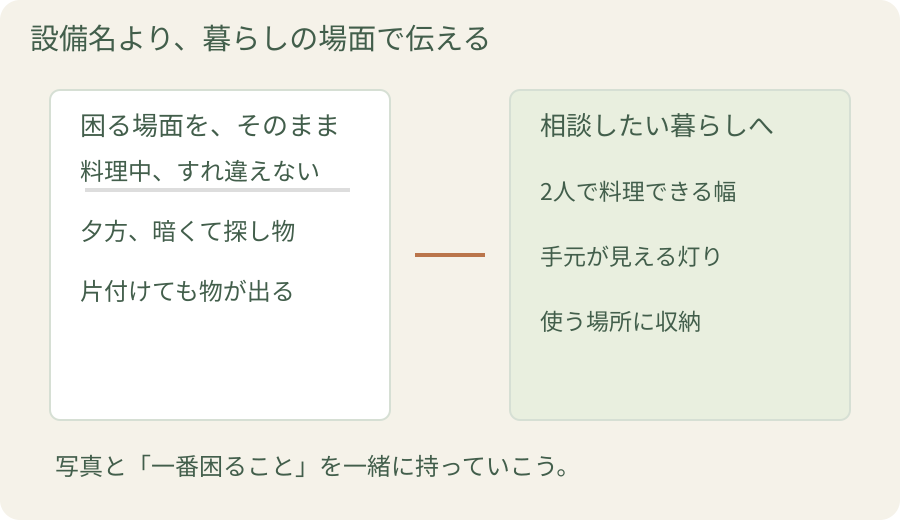
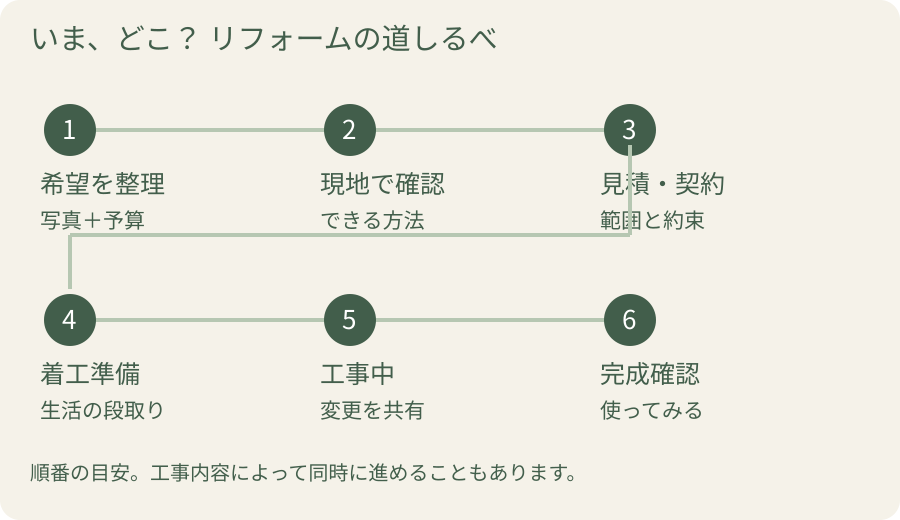

「リフォームしよう」と決めたけれど、最初の相談で何を話せばいい？ 商品を選ぶより先に、いつもの暮らしを少し振り返ってみましょう。困る場面を伝え、できる方法を知り、約束をそろえる。この順番がわかると、打ち合わせで置いていかれずに進められます。
1. 相談前は「困ること」と「楽しみ」をメモする

図を拡大して見るまず家の中を歩いて、気になる場所を撮ってみましょう。収納から物があふれる、掃除のたびに腰がつらい、脱衣室が寒い。写真に短い言葉を添えると、担当者にも場面が伝わります。
その横に「こうなったらうれしい」も書きます。夫婦で料理を楽しみたい。洗濯を一か所で済ませたい。家に友人を呼びたい。困りごとと楽しみをセットにすると、設備を交換した先の暮らしまで相談できます。
私なら、希望に「いちばんかなえたいこと」の印を一つ付けます。 予算に合わせて選ぶときの軸になるからです。予算の目安、希望時期、図面や過去の工事資料があれば、一緒に持っていきましょう。
相談前、スマホに残す3行
困る場面：夕食の準備中に家族とすれ違えない。
かなえたいこと：2人で料理できるようにしたい。
優先順位：広い作業場所を優先。食器棚は後でもよい。
家族で意見が違うときも、この3行をそれぞれ書いて持ち寄ると、設備の好みだけの話にならずに済みます。「何を買うか」の前に「何が楽になるとうれしいか」をそろえてみてください。
2. 現地調査で、わが家にできることを確かめる
最初の問い合わせは、このくらい具体的に
「築25年のマンションで、キッチンを使いやすくしたいです。夕食の支度中に家族とぶつかるのが悩みです。今の位置での交換と、配置を変える方法の両方を相談できますか？」
相談先は、希望する工事と似た事例を扱う会社から探してみましょう。設備の交換が得意な会社、間取りまで含めた提案が得意な会社など、強みはさまざま。事例写真を見るときは、仕上がりと一緒に「どんな不便を、どう解決したのか」を聞くと、自分の相談に合うか判断しやすくなります。
相談先が決まったら、現地を見てもらいます。寸法、建物の状態、配管・電気などを調べ、希望の工事に必要な条件を確認する段階です。
例えば、キッチンを同じ位置で交換するのか、向きを変えるのかで、調べる内容や工事範囲は変わります。「この希望なら何が必要ですか」「別の方法もありますか」と聞いてみてください。
マンションなら管理規約や管理組合への申請、賃貸住宅なら貸主の承諾も確認します。相談や調査に費用がかかるか、有料になるのはどの段階からかも、依頼前に聞いておくと安心です。
提案をもらったら、実物で動いてみる
収納の高さ、引き出しの重さ、掃除する場所。カタログでよさそうでも、自分の体で試すと気づくことがあります。ショールームでは「普段よく使う動き」を再現し、家の寸法と一緒に担当者へ伝えましょう。現地の設置条件を確かめてから、商品を絞ると行き戻りを減らせます。
3. 見積もりを比べ、約束をそろえて契約する
見積書を受け取ったら、担当者と写真や図面を見ながら「どこを、何で、どこまで直すのか」を確認します。複数社に相談するときは、希望と条件をそろえて伝えましょう。
| 確認するもの | 担当者に聞きたいこと |
|---|---|
| 工事範囲 | 古い設備の処分や周囲の補修も含みますか？ |
| 商品・材料 | 提案された機能と、実際に選ぶ型番は合っていますか？ |
| 日程 | 工事中に使えない場所は、いつからいつまでですか？ |
| 金額 | 税込総額、支払いの時期、追加費用の扱いは？ |
工事内容、金額、工期、支払条件、保証などの説明に納得したら、工事請負契約書と、添付する図面・仕様書に同じ約束が記載されているかを確かめます。変更する場合の連絡方法も決めておきましょう。
4. 着工前に、工事中の一日を想像する
工程表を受け取ったら、家族の生活予定と並べてみてください。お風呂を使えない日はどうするか。調理ができない間、どこで食事を用意するか。在宅勤務の会議と大きな音の出る作業が重ならないか。ここまで話すと、工事中の過ごし方が見えてきます。

荷物を動かす範囲や近隣への挨拶、職人さんの駐車場所も、この段階で打ち合わせます。工事中に暮らせる範囲は工事内容によって違うので、仮住まいが必要かも早めに相談しましょう。
5. 工事中の連絡から、完成後の暮らしへ
工事中は、窓口になる担当者と連絡方法を決めます。「今日の作業」「次の予定」「暮らしへの影響」を短く共有してもらうと、留守の日にも予定を立てやすくなります。
追加したいことが出てきたら、その窓口に相談し、費用と日程を確認してから変更を決めます。完成時には担当者と一緒に仕上がりを確かめ、設備を動かして使い方を教わります。保証や困ったときの連絡先も受け取りましょう。
新しいキッチンで最初に何を作ろう。暖かいお風呂で、ゆっくり過ごそう。最初に書いた楽しみを思い出しながら、新しい暮らしを始めたいですね。